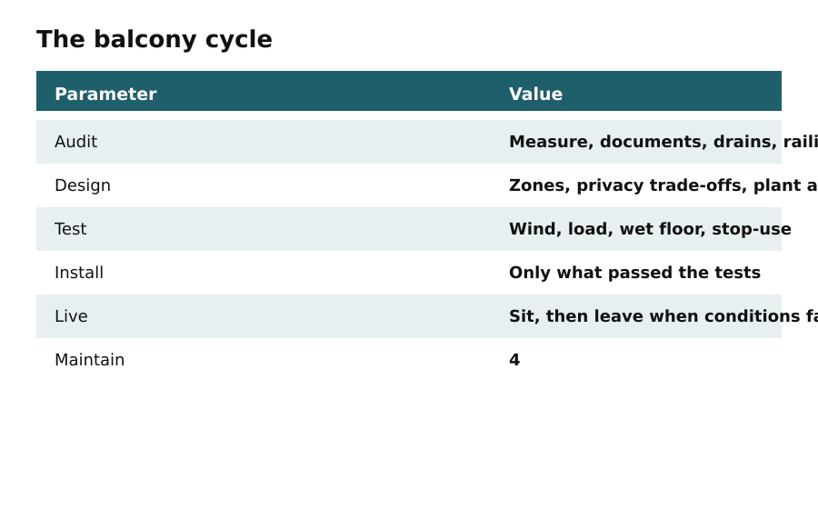
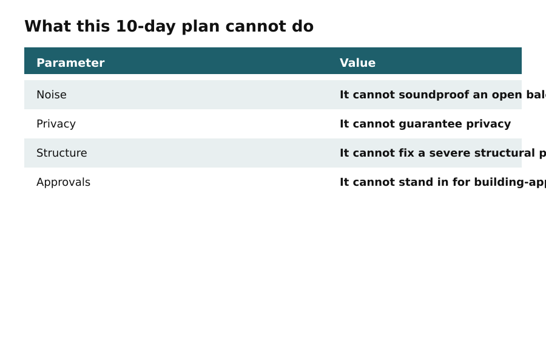

Day 0
Define Your Intention
In this apartment
Riya, living in a 1BHK in Pune, wants to create a calming space on her 30 square foot balcony for her evening meditation practice. She decides her intention is a 10-minute evening practice for stress relief with soft lighting and herb scent.
Usable micro-retreat first. Styling after the balcony is still a balcony.
Decide what Zen means for you. Silent sitting, breathwork, gentle stretching, or guided audio all have different needs. Choose a realistic session length, for example, 10 minutes, and a consistent time of day. Write one sentence that guides every decision. For instance, a 10-minute evening practice for stress relief with soft lighting and herb scent. This short statement prevents overcomplication and stops impulse purchases that do not serve your practice.

Having a clear intention helps you focus on what is essential for your space. It acts as a guiding principle for all your design choices, ensuring that every element contributes to your goal of creating a calming environment. Without this clarity, you risk overcomplicating your design and making unnecessary purchases that do not align with your needs.

By defining your intention, you set the stage for a thoughtful and cohesive design process. This clarity will help you navigate choices regarding furniture, decor, and layout, ensuring that your balcony becomes a true retreat.
Before you move on
- Write your intention statement and set your practice time.